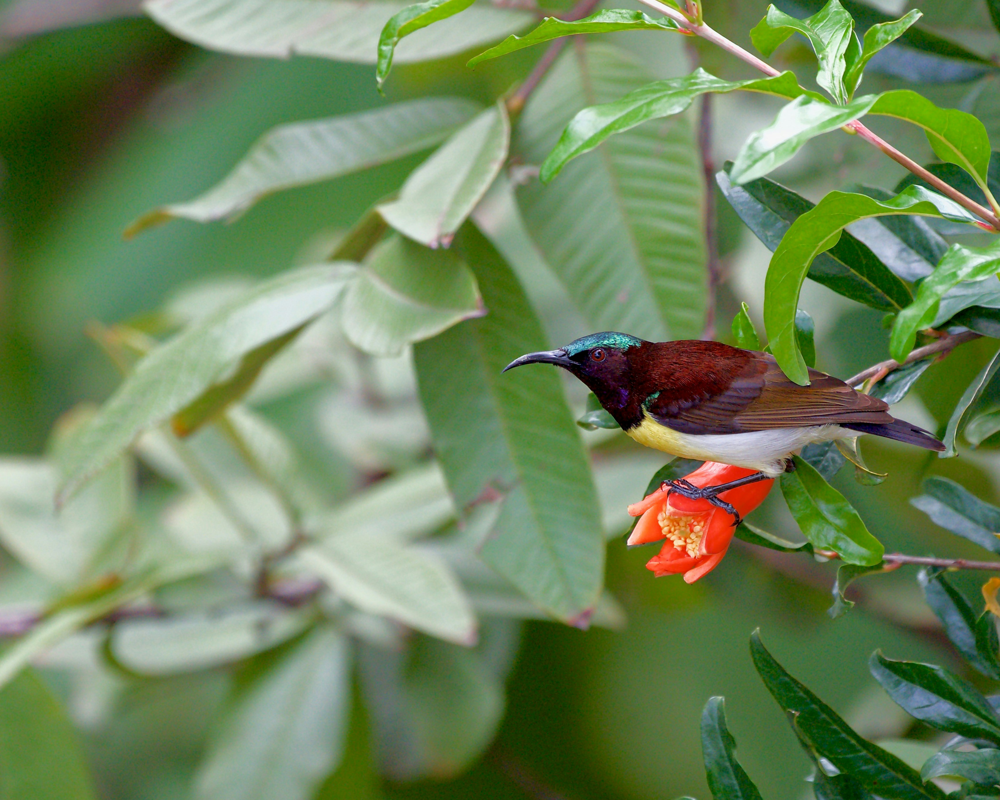

The Purple-Rumped Sunbird is a tiny nectar-feeding bird found mainly in the Indian subcontinent. Breeding males display brilliant purple, blue, green, and maroon plumage, while females are much more subdued. It feeds on nectar from flowers and also takes small insects, particularly when feeding young. Its small size and rapid movements make it easy to miss despite its vivid colours.